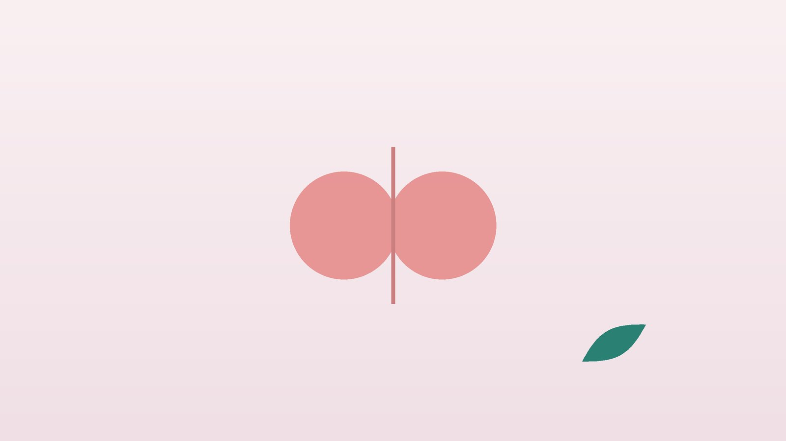

편도염이 자주 반복된다면, 반복 편도염 한방 관리

나와 아이의 목, 이런 모습인가요?
- 침을 삼킬 때마다 목이 아프고 38도 넘는 열이 난다
- 거울로 보면 편도가 붉게 붓고 하얀 막이나 고름 점이 보인다
- 턱 아래 목의 림프절이 붓고 누르면 아프다
- 1년에 여러 번 같은 증상으로 항생제를 먹었다
- 피곤하거나 잠이 부족하면 어김없이 목부터 붓는다
- 입 냄새가 나고 편도에 노란 알갱이(편도결석)가 끼곤 한다
이 체크리스트는 진단 도구가 아니라 상담이 필요한지 가늠해 보는 참고용입니다.
편도염이 자꾸 반복되는 이유와 수술 기준은?
목이 아프고 편도가 붓는 원인의 대부분은 바이러스이며, 이 경우 항생제가 필요하지 않습니다. 반면 A군 연쇄상구균이 원인이라면 신속항원검사나 배양검사로 확인한 뒤 페니실린 계열 항생제를 보통 10일 동안 먹습니다. 하루 이틀 만에 나아져도 끝까지 먹어야 류마티스열 같은 합병증을 막습니다.
미국 이비인후과학회의 소아 편도절제술 지침은 1984년 패러다이스(Paradise) 연구를 바탕으로, 최근 1년에 7회 이상, 2년간 해마다 5회 이상, 또는 3년간 해마다 3회 이상 편도염을 앓고 각 에피소드가 38.3도 이상의 열, 목 림프절 비대, 편도 삼출물, 연쇄상구균 양성 중 하나 이상으로 기록된 경우 수술을 고려할 수 있다고 봅니다. 기준에 못 미치면 우선 경과를 지켜보도록 권하며, 성인도 이를 참고합니다.
응급실·이비인후과로 바로 가야 하는 신호
- 한쪽 목만 유난히 아프고 목젖이 반대쪽으로 밀려 보인다
- 입이 잘 벌어지지 않고 목소리가 입에 뜨거운 것을 문 듯 웅얼거린다
- 침을 삼키지 못해 흘리거나 물도 넘기지 못한다
- 숨이 차거나 숨 쉴 때 그르렁 소리가 난다
- 목이 붓고 뻣뻣해 고개를 돌리기 어렵다
- 고열이 사흘 넘게 이어지거나 소변량이 크게 줄었다
앞의 세 가지는 편도 옆에 고름이 차는 편도주위농양의 전형적인 신호로, 고름을 빼내는 처치가 필요해 바로 진료를 받아야 합니다. 숨이 차는 것은 기도가 좁아지는 신호일 수 있습니다.
한의학은 반복되는 편도염을 어떻게 보나요?
한의학에서는 목 양쪽이 누에나방(蛾)처럼 부풀어 오른다 하여 편도가 붓는 것을 유아(乳蛾)라 불렀고, 한쪽이면 단유아, 양쪽이면 쌍유아로 나누었습니다. 목이 붓고 막혀 아픈 증상은 넓게 후비(喉痺)라 하였습니다. 『상한론』 소음병 편에도 목 통증에 감초탕, 낫지 않으면 길경탕을 쓴다는 구절이 있습니다.
급하게 붓고 열이 날 때는 바깥의 열독이 목에 몰린 것으로 보아 열을 식히고 부기를 빼는 데 집중합니다. 반면 자주 재발하는 사람은 급성기가 끝난 뒤에도 몸의 바탕에 문제가 남아 있다고 보았는데, 진액이 부족해 목이 늘 마르고 열이 뜨는 경우, 기운이 약해 조금만 무리해도 방어가 무너지는 경우가 대표적입니다. 그래서 아프지 않은 시기의 관리가 더 중요합니다.
나는 어떤 유형일까?
1. 풍열(風熱)·열독 급성기, 갑자기 붓는 경우
- 이런 분에게 많아요
- 감기 기운 뒤 바로 목이 붓는 사람
- 나타나는 모습
- 편도가 붉게 붓고 삼키기 힘들며 열이 오른다
- 함께 오는 몸의 신호
- 목 림프절 통증, 두통, 갈증
- 진찰에서 보이는 모습
- 편도가 붉고 맥이 빠름
- 치료 방향
- 열을 식히고 부기를 빼는 방향 (은교산·형개연교탕 계열), 세균성이면 항생제 우선
- 오늘부터 해 볼 것
- 처방받은 항생제는 끝까지 먹고 미지근한 물을 자주 마시세요.
2. 음허화왕(陰虛火旺) 목이 늘 마르고 칼칼한 경우
- 이런 분에게 많아요
- 말을 많이 하는 직업, 밤샘이 잦은 사람
- 나타나는 모습
- 오후나 밤에 목이 칼칼하고 편도가 검붉게 약간 부어 있다
- 함께 오는 몸의 신호
- 입 마름, 손발바닥 열감, 잠이 얕음
- 진찰에서 보이는 모습
- 혀가 붉고 설태가 적음
- 치료 방향
- 진액을 보태 목의 열을 가라앉히는 방향 (맥문동탕·육미지황탕 계열)
- 오늘부터 해 볼 것
- 잠을 7시간 이상 확보하고 실내 습도를 높여 주세요.
3. 폐비기허(肺脾氣虛) 지치면 바로 탈 나는 경우
- 이런 분에게 많아요
- 감기가 잦은 아이, 과로가 많은 성인
- 나타나는 모습
- 피곤하거나 찬 바람을 쐬면 어김없이 목이 붓는다
- 함께 오는 몸의 신호
- 땀이 많음, 쉽게 지침, 식욕 부진
- 진찰에서 보이는 모습
- 맥이 약하고 혀가 담백함
- 치료 방향
- 방어하는 기운을 돋우는 방향 (옥병풍산·보중익기탕 계열)
- 오늘부터 해 볼 것
- 무리한 날 저녁에는 일찍 쉬고 따뜻한 음식을 드세요.
4. 담열(痰熱)·편도결석 목에 무언가 걸린 듯한 경우
- 이런 분에게 많아요
- 입 냄새와 편도결석이 있는 사람
- 나타나는 모습
- 목 이물감과 입 냄새, 노란 알갱이가 나온다
- 함께 오는 몸의 신호
- 끈적한 가래, 헛기침
- 진찰에서 보이는 모습
- 편도 표면이 울퉁불퉁하고 설태가 두꺼움
- 치료 방향
- 가래와 열을 삭이는 방향 (길경탕 계열 응용)
- 오늘부터 해 볼 것
- 식후 물로 가글하고 기름진 야식을 줄여 보세요.
한의원에서는 어떻게 진찰하나요?
- 재발 기록: 최근 1~3년 동안 편도염을 앓은 횟수, 열과 항생제 처방 여부, 검사 결과를 여쭙니다.
- 응급 신호 확인: 입 벌림, 삼킴, 숨쉬기, 한쪽 붓기를 확인하고 해당되면 바로 이비인후과·응급실을 안내합니다.
- 목과 입안 관찰: 편도의 크기와 색, 고름, 결석, 목 림프절을 봅니다.
- 체질 진찰: 수면과 피로, 땀, 식사, 직업상 목 사용과 함께 설진·맥진으로 유형을 판단합니다.
침·약침·한약 치료는 어떻게 하나요?
1. 침 치료
성인은 목과 손발의 혈자리에 침을 놓고, 아이에게는 바늘을 찌르지 않는 소아 스티커침을 붙여 둡니다.
- 소상(少商): 엄지손톱 뿌리 바깥쪽 모서리에서 조금 떨어진 곳. 목이 붓고 아플 때 써 온 혈입니다.
- 합곡(合谷): 손등 엄지와 검지 사이 볼록한 곳. 얼굴과 목의 열을 내립니다.
- 열결(列缺): 손목 엄지 쪽, 손목 주름에서 손가락 두 마디쯤 위의 뼈 돌출부 위. 조해와 짝지어 목 증상에 씁니다.
- 조해(照海): 안쪽 복사뼈 끝에서 곧장 아래로 내려와 만나는 우묵한 자리. 목이 마르고 칼칼한 것을 다스립니다.
2. 약침
성인은 진찰 후 필요한 경우 목 주변의 긴장과 염증 반응을 다스리기 위해 약침을 시행합니다. 어린이에게는 약침을 쓰지 않습니다.
3. 한약
탕약을 기본으로, 급성기에는 열과 부기를 다스리고 재발을 줄이는 시기에는 진액과 기운을 보태는 처방을 씁니다. 연쇄상구균 편도염으로 항생제를 먹고 있다면 항생제를 끝까지 먹는 것이 우선이며, 한약은 함께 복용할 수 있도록 조정합니다. 아이 몫은 쓴 약재를 줄여 짓고 단것을 살짝 타 먹여도 되지만, 첫돌이 지나지 않은 아기에게 꿀은 금물입니다. 복용 중인 약은 알려 주시면 확인해 처방하고, 임신 중이라면 진료 때 꼭 알려 주세요. 확인 후 안전한 약재로 처방합니다. 한약은 원장이 원내 탕전실에서 약재 선별부터 달이는 과정까지 직접 관리하며, 10일분씩 처방해 복용 경과를 보고 약재 구성과 양을 조절합니다.
원장님이 네이버 블로그에 진료 이야기와 건강 정보를 꾸준히 올리고 있습니다. 더 많은 이야기는 블로그에서 확인해 보세요.
블로그 보기관리는 어떤 순서로 진행되나요?
- 급성기 세균성이 의심되면 검사와 항생제가 먼저입니다. 한방 치료는 목 통증과 열을 덜어 주는 보조로 함께합니다.
- 회복기 2~4주 목의 남은 부기와 피로를 다스리고 재발을 부르는 생활 요인을 찾습니다.
- 1~3개월 체질에 맞춘 침 치료와 탕약으로 바탕을 다지고 편도염 횟수를 기록합니다.
- 6개월~1년 재발 횟수를 이전 해와 비교하고, 수술 기준에 해당하면 이비인후과 상담을 안내합니다.
반복 편도염은 계절과 피로에 따라 재발 간격이 달라 몇 달 단위의 횟수 기록으로 경과를 판단합니다.
재발을 줄이는 생활 관리
- 수면: 피로가 쌓이면 편도가 먼저 붓습니다. 성인은 7시간 이상, 아이는 나이에 맞게 충분히 재웁니다.
- 목 촉촉하게: 실내 습도를 40~60%로 맞추고 물을 자주 마시며, 말을 오래 한 날은 목을 쉬게 합니다.
- 가글과 양치: 식후 양치와 미지근한 소금물 가글로 입안을 깨끗하게 유지합니다.
- 자극 줄이기: 흡연, 과음, 맵고 뜨거운 음식을 피합니다.
- 혈자리 지압: 목이 칼칼할 때 손목의 열결혈과 안쪽 복사뼈 아래 조해혈을 엄지로 10초씩 눌러 줍니다.
다른 진료가 함께 필요한 경우
- 입 벌림 장애, 침 흘림, 한쪽 목 붓기가 있다면 바로 이비인후과나 응급실로 가세요.
- 재발 횟수가 수술 기준에 해당한다면 이비인후과에서 편도절제술을 상담하세요.
- 코골이와 수면 중 무호흡이 있는 아이는 편도·아데노이드 비대 확인이 필요합니다.
- 편도염 후 소변 색 변화, 관절 붓기가 있다면 소아청소년과나 내과 검사를 받으세요.
자주 묻는 질문 Q&A
- Q1. 목이 아플 때마다 항생제를 먹어야 하나요?
- 대부분의 인후통은 바이러스성이라 항생제가 필요 없습니다. 연쇄상구균이 확인될 때 처방받아 끝까지 드세요.
- Q2. 편도를 떼어 내면 면역력이 떨어지나요?
- 편도절제 후 면역 기능이 크게 떨어진다는 근거는 뚜렷하지 않으며, 수술 여부는 이비인후과에서 결정합니다.
- Q3. 수술 기준에 못 미치면 어떻게 하나요?
- 지켜보면서 재발을 줄이는 관리를 하는 것이 일반적이며, 한방 치료를 함께 받을 수 있습니다.
- Q4. 아이도 침을 맞나요?
- 아이에게는 피부에 붙이는 소아 스티커침을 쓰고, 약침은 쓰지 않습니다.
- Q5. 한약이 써서 아이가 안 먹어요.
- 아이용 탕약은 쓴 약재를 줄여 맛을 순하게 맞춥니다. 집에서 단것을 약간 타 주셔도 되며, 돌 전 아기라면 꿀 대신 다른 단맛을 쓰세요.
- Q6. 편도결석은 왜 생기나요?
- 편도의 오목한 틈에 음식 찌꺼기와 세균이 뭉쳐 생기며, 가글과 양치가 도움이 됩니다.
- Q7. 항생제와 한약을 같이 먹어도 되나요?
- 함께 복용할 수 있도록 조정합니다. 항생제는 처방 기간을 꼭 지키세요.
- Q8. 어른이 되면 편도염이 줄어드나요?
- 아이 때보다 줄어드는 경우가 많지만, 피로와 흡연이 겹치면 성인에게도 반복될 수 있습니다.
문원열 대표원장한의사 · 365스마일한의원
임상 경력 15년, 인천 서구 가정동에서 개원 후 10년째 진료하고 있으며, FCST 턱관절학회·연부조직학회·침도학회 등에서 활동합니다. 아픈 곳만이 아니라 증상의 원인을 찾아 진료합니다.
진료 안내
- 진료시간
- 평일 09:00~20:00 (점심시간 13:00~14:00, 접수 마감 19:30)
토·일·공휴일 09:00~15:00 (접수 마감 14:30) - 주소
- 인천광역시 서구 가경주로 46, 2층 (가정동)
인천2호선 가정중앙시장역 인근
영상으로 길 안내 보기 → - 주차
- 한의원 건물 바로 앞 1층 도원주차장
- 예약
- 예약 바로가기 또는 전화 예약
진료시간은 사정에 따라 바뀔 수 있으니 방문 전 전화로 확인해 주세요.
참고 자료
- Mitchell RB, et al. Clinical Practice Guideline: Tonsillectomy in Children (Update). Otolaryngology–Head and Neck Surgery, 2019 — 원문
- Paradise JL, et al. Efficacy of tonsillectomy for recurrent throat infection in severely affected children. New England Journal of Medicine, 1984
- 장중경, 『상한론(傷寒論)』 소음병편(少陰病篇): 감초탕(甘草湯)·길경탕(桔梗湯)
- 질병관리청 국가건강정보포털 — 원문
※ 이 글은 일반적인 건강 정보이며, 개인의 상태에 따라 치료 방법과 결과는 다를 수 있습니다. 정확한 진단과 치료는 진료를 통해 결정됩니다. 침·약침 시술 후 드물게 멍, 통증 등이 생길 수 있습니다.